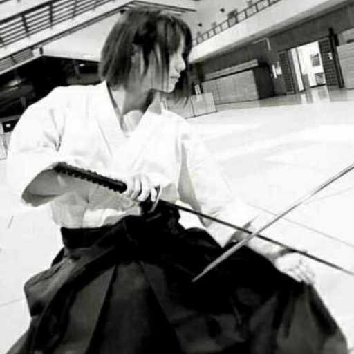
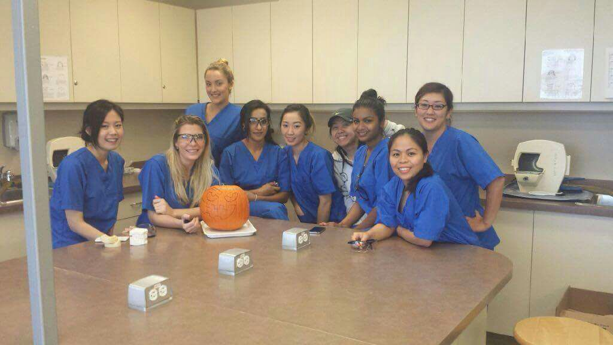

名字:
汉娜钚娜娜
性别:女

介绍:加拿大CDA,戏精,毒舌女剣豪
问题
答案
新建于:2017-05-09 12:46:40 PM，更新于2017-06-06 05:57:24 AM
Pre上一页
Next下一页
跳页:
正文: 木刀单人练习和斩草席，十年斩了1000多卷了，期间换了好几个供应商。刀从90加币的垃圾换成330加币的1095钢好刀，断了以后又换成现在1045钢，210加币的。自己打磨保养的很差，估计用不了多久就又得换了。
手从背面看还不错，正面全是茧子，尤其是食指和中指的第一节关节周围。到诊所工作第一次被医生看到着实吓了他一跳。
握力相当有料，跟撸铁的印度男大夫握手捏得他直喊疼。
腕力也相当可以，两公斤重，一米半长的太刀能单手用。
但是有肩周炎了，下雨天右边肩膀特别沉。
快步走，少说已经五年了吧，现在一小时能走六到八公里，不停的，出去徒步最多的时候一天能走30多公里山路。站可以站着工作10小时，上次我的椅子坏了就站了好几天，感觉挺累，不过第二天早上起来就没事了。
所以手上和脚底全是茧子，每年能穿坏一双跑鞋，感觉要是有贼在后面跟着我他会累垮的。。。
写作，虽说是很矫情的文字居多，不过对于增加表达能力还是很有帮助的。梦想是有朝一日退休了能坐在家里尽情的写，争取辞世之前留下几个系列的小说，让太空歌剧的荣光再次照耀第三行星。
看美剧，如果算最近五年那平均每天至少三集吧，感觉对口语帮助很大，听力自然也不用说了，在加拿大上学基本没有听不懂的，偶尔很文化的梗还比不少本地学生get得更彻底。
熬夜打游戏，哈哈哈，这个绝对是拉低平均分的项目。
wow从公测开始玩的，最近五年也就是今年3月份最后一次AFK的，一直到现在，感觉彻底戒掉了。
搭茬，在街上或者海边或者网上找陌生人聊天，听他们的故事，好多写作的素材就是这么积累下来的。还有阅读，虽说读英语还是挺吃力的，但是每天都读一点，关于科技的读的比较多一些，想知道人造人和动力盔甲啥时候能上市啊。
虐待男票。他没过来的时候是视频聊天折磨他，他来了之后是家暴加调戏，要不这头猛牛太刚猛了会给自己惹麻烦。现在可能是年龄原因吧，稳重圆滑了很多，也开得起玩笑了，很会自嘲，不过我更愿意相信是我的努力奏效了。
陪我婆婆聊天，听她老人家训话。婆婆一辈子不容易，从我们初中开始就是她一个人把两个孩子拉扯大，我也得算是她的半个女儿，虽说有时候不愿意听她唠叨，但是让她觉得有个人可以倾诉还是我应该做的。
吃多种维生素片，这个现在也有人说是没用的，不过我觉得我的食谱很难保证每天把所有的维生素和矿物质都吃够量，算是保险吧，毕竟人过三十就得特别注意健康了。
反正最近五年没生过任何病没吃过止疼片和Tums消化片以外的任何药，除了12年的时候拔了一颗阻生智齿。
感觉我交医保纯粹就是浪费钱。。。当然直到怀孕。
嗯，5年，似乎也没有啥别的啦，钓鱼不算，因为没有车一年也去不了几次。
再有就是多笑了吧。虽然我很孤僻，但即使是在最困难的时候，只要身边有朋友，有家人，就一定要用笑声来美化我的生活。

就酱。
Pre上一页
Next下一页
跳页: